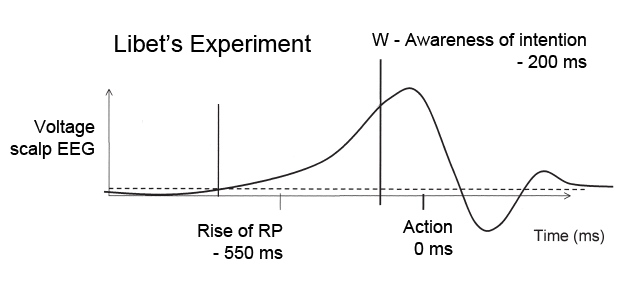
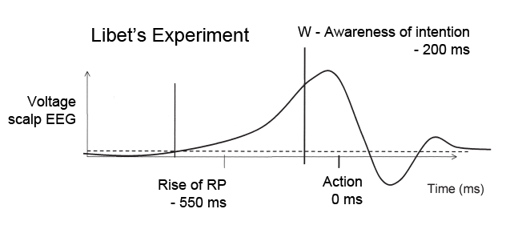

Sobre el libre albedrío
“We do not know what we intend to do until the intention itself arises. To understand this is to realize that we are not the authors of our thoughts and actions in the way that people generally suppose.”
― Sam Harris, Free Will
¿Qué es el libre albedrío? También conocido como “libertad de elección”, el libre albedrío es la capacidad de un agente no condicionado íntegramente para decidir. La RAE lo define como “Potestad de obrar por reflexión y elección.”
Hagamonos la siguiente pregunta, ¿si viajara al pasado podría obrar de manera diferente? Hemos de señalar que el universo entero se encuentra átomo por átomo ordenado como en aquel instante pasado, tus recuerdos, pensamientos y apetitos son los de aquel entonces. Esta es la situación que plantea Sam Harris en su obra Free Will y sirve para ilustrar a la perfección el condicionamiento al que está sometido el ser humano; un condicionamiento material según la tesis que defiendo.
Así pues, nos encontramos otra vez en la mañana del día de hoy cuando tomamos la elección de tomar café en vez de té, ¿cambiará nuestra elección? Dado que el término “determinismo” puede dar ha entender que no hay lugar al azar, me inclino más por el uso de “mecanicista” que sí contempla la probabilidad como algo intrínsico en el universo. Obviando el hecho de que el ser humano no conoce nada con certeza, todo parece apuntar a que tomaremos la exacta misma decisión. Por tanto, si se quiere argumentar en favor del libre albedrío, se ha de recurrir a un elemento metafísico o por lo menos, incognoscible. Queda así la discusión del libre albedrío para el terreno de la metafísica.
Pequeño viaje por el mundo de la metafísica.
Premisa 1: Existencia del alma.
¿Qué pasaría si no aceptáramos la premisa materialista? Supongamos que exista algo inmaterial que forma parte de nosotros (llamémosle “alma”), parece que esta puede ser influenciada por la materia. Como mínimo hambre, la sed y la falta de sueño tienen un efecto en nuestra toma de decisiones. Sin embargo, no podemos probar que el alma esté supeditada a la materia, es decir, no podemos probar que existe un control total de la materia sobre el alma. De hecho, asumimos que el alma tiene libertad de elegir de manera axiomática.
Premisa 2: Libre albedrío del alma.
Premisa 3: Capacidad para relacionarse con el mundo material.
Podría darse el caso de que el alma sea libre y tenga capacidad para decidir, pero no para actuar. Puede que solo tenga una capacidad parcial para dirigir nuestra conducta, de manera que, determinados estímulos externos vuelvan incontrolables nuestras acciones. De esta manera existe un cerebro pensante quien recibe ordenes del alma, pero que no siempre las ejecuta al pie de la letra. Esta postura parecería la mejor forma de conciliar el libre albedrío con la evidencia empírica sobre la actitud humana. Así podría argumentarse que existe una libertad de elección que nace del alma, pero se ve condicionada por el entorno. Aun existiendo el alma, el mundo físico parece ser relevante para la cuestión.
“How can we be “free” as conscious agents if everything that we consciously intend is caused by events in our brain that we do not intend and of which we are entirely unaware?”
― Sam Harris,Free Will
Cabe también preguntarse ¿Quién soy yo? Esta pregunta es epecialmente espinosa para aquellos que aceptamos que el es universo mecanicista. Si todos somos parte de un mismo sistema, solo cabe esperar una división del “Yo” y “lo otro” puramente artificial.
“Pero yo soy libre, ¿verdad?” Esta mañana cuando te has levantado has sentido que sí podías elegir, incluso ahora sientes que tenías elección. Esta sensación no es más que una ilusión, un simple mecanismo del cerebro que ratifica las acciones que has tomado para que creas que has sido tu. La introducción del libre albedrío como mera ilusión no puede estar completa sin hacer mención a los polémicos experimentos de Libet.
Experimentos de Libet
Estos experimentos se llevaron a cabo en 1983 para estudiar y medir cuando la persona se hacía consciente de la decisión de mover el dedo. Libet mostraba un punto que se movía conforme a las aguijas del reloj dentro de un osciloscopio, y la persona que estaba siendo probada debía recordar cual era la posición del punto en el momento en el que se hacía consciente de su decisión de mover el dedo o la muñeca.
Los resultados de los experimentos fueron que 550 milisegundos antes de mover la muñeca ya había actividad de inconsciente de mover la muñeca y tan solo 200 milisegundos antes de que aparecía la decisión consciente.
 

Este experimento comúnmente adoptado para señalar que el “yo” consciente no tiene libre albedrío, no está exento de críticas. De hecho, el propio Libet no creía que su experimento fuera en contra del libre albedrío, él creía que el movimiento sí se iniciaba de manera subconsciente pero que la parte consciente tenía derecho de veto (esto se conoce como “Free Won’t”). Vamos a ver algunas de estas críticas:
La primera sería que los sujetos de prueba tomaban la decisión de mover el dedo en el momento que aceptaban participar en el experimento, momento que lógicamente no se medía en el experimento. En mi opinión esta es una ocurrencia bastante audaz, pero improbable. En algún momento debía el cerebro elegir el momento exacto en que se movería el dedo. Dado que en el momento del experimento parece ser la parte subconsciente quien lo mueve, podríamos decir que la parte consciente delegó esa tarea a la parte subconsciente. El problema es que esta misma delegación se hizo de manera subconsciente, pues en ningún momento el sujeto piensa “Voy a dejar deliberadamente a mi subconsciente dedicir el momento exacto para retirar el dedo”.
La segunda crítica viene a raíz de otro experimento en el que Libet pidió a los sujetos que no flexionaran las muñecas, sino que meramente “se preparasen” para flexionarlas. En este experimento también se encontró una subida de RP (“Readiness Potencial”). Esto indicaría que la subida de RP no va ligada a una decisión consciente de hacer algo, aunque quizás si tenga relación con impulsos o deseos de hacerlo. Además, este primer incremento de RP coincidiría con la etapa más temprana del modelo de dos etapas de William James 10 .
Otra crítica estaría relacionada con el tiempo subjetivo, pues el “presente” subjetivo está realmente en un pasado casi inmediato debido al tiempo que tarda la información en llegar y procesarse en el cerebro. De hecho, si alguien presiona una tecla de manera regular y ve como resultado un flash tras un intervalo determinado, si el intervalo del flash es acortado los sujetos tienen la sensación de que el flash ha sido antes de pulsar la tecla. En otros experimentos llevado a cabo para suprimir el problema del tiempo subjetivo, se llegó a la conclusión de que la intención de moverse aparece antes de lo recogido por Libet, pero no antes del primer incremento. Esto podría reforzar la opinión de Libet sobre el derecho a veto de la parte consciente (“Free Won’t”).
Algunos ponen de relieve la imposibilidad del experimento para medir la voluntad de hacer algo. Argumentan que el experimento no incluía medidas efectivas para medir todas las variables y, por ende, no aporta datos concluyentes. Este mismo razonamiento puede usarse para argumentar en contra del “Free Won’t”, pues la parte subconsciente sería capaz de determinar con anterioridad nuestro veto, y no podría haberse medido en el experimento.
Si de verdad existe o no libre albedrío es una cuestión metafísica e incognoscible que de poco nos sirve preguntarnos, más que por el placer de pensar. Sin embargo, a nivel práctico todavía cabe la duda de si la parte consciente tendría algún tipo de participación en la toma de decisiones o es un títere con consciencia de sí mismo manejado por el subconsciente.
Bibliografía:
- Harris, Sam (6 de marzo de 2012). Free Will (en inglés).
- Hallett, M. (2007, June). Volitional control of movement: The physiology of free will. Retrieved December 19, 2020, from https://www.ncbi.nlm.nih.gov/pmc/articles/PMC1950571/
- Lavazza, A. (2016, June 1). Free Will and Neuroscience: From Explaining Freedom Away to New Ways of Operationalizing and Measuring It. Retrieved December 19, 2020, from https://www.ncbi.nlm.nih.gov/pmc/articles/PMC4887467/
- https://www.uma.es/naturalezaylibertad/resources/Vol_8_2017/4-Lombardi.pdf
- https://wmpeople.wm.edu/asset/index/cvance/libet
- https://www.ucl.ac.uk/~uctytho/DoyleOnDoyle2.pdf